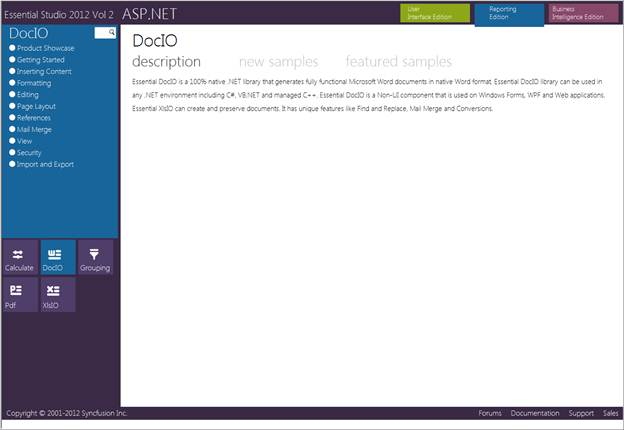
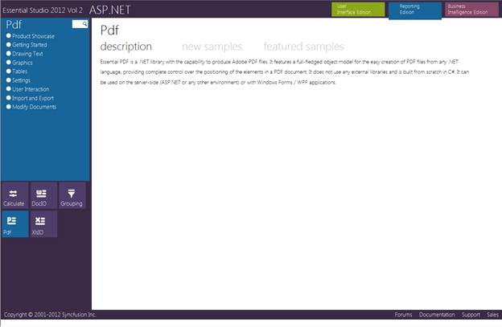
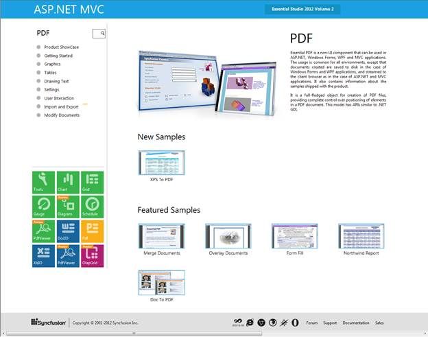
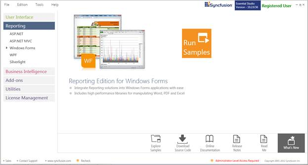
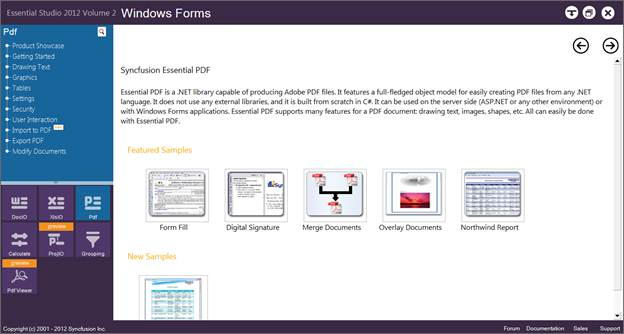
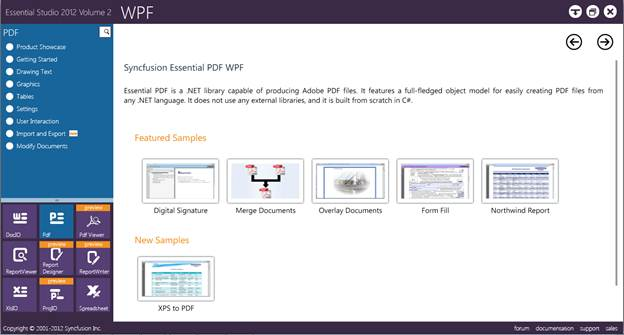
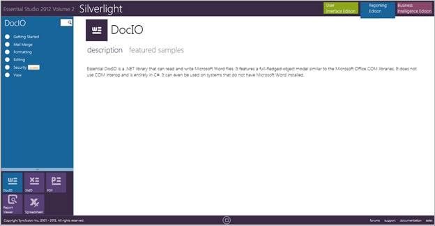
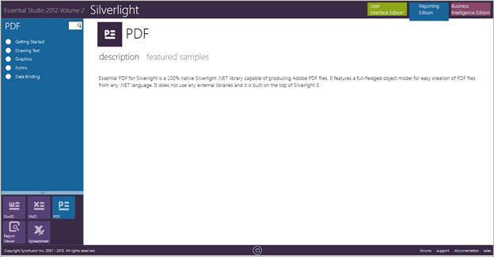

This section covers the location of the installed samples and describes the procedure to run the samples through the sample browser and online. It also lists the location of source code.
Sample installation locations
Sample install locations for different platforms are listed below:
· ASP.NET-The ASP.NET samples are installed in the following location:
...\My Documents\Syncfusion\EssentialStudio\Version Number\Web\pdf.web\Samples\2.0
· ASP.NET MVC-The ASP.NET MVC samples are installed in the following location:
...\My Documents\Syncfusion\EssentialStudio\<Version Number>\MVC\pdfmvc\samples\3.5
· Windows Forms-The Windows Forms samples are installed in the following location:
...\My Documents\Syncfusion\EssentialStudio\Version Number\Windows\PDF.Windows\Samples\2.0
· WPF-The WPF samples are installed in the following location:
...\My Documents\Syncfusion\EssentialStudio\Version Number\WPF\pdf.WPF\Samples\3.5
· Silverlight-The Silverlight samples are installed in the following location:
...\My Documents\Syncfusion\EssentialStudio\Version Number\Silverlight\pdf.Silverlight\Samples\3.5
Viewing Samples
To view the samples:
1. Click Start -> All Programs -> Syncfusion -> Essential Studio <x.x.x.x> -> Dashboard -> Reporting Edition.

Figure 2: Syncfusion Essential Studio Dashboard Reporting Edition
The steps to view the pdf samples in various platforms are discussed below:
ASP.NET
1. Click the drop-down button of the ASP.NET platform. The following options are displayed and You can view the samples in the following three ways:
· Run Samples - View the locally installed PDF samples for ASP.NET using the sample browser
· Online Samples - View the online PDF samples for .NET
· Explore Samples - Locate the samples for PDF on the disk
2. Click Run Samples link. Essential Studio ASP.NET - Reporting Edition sample browser is displayed.

Figure 3: ASP.NET Sample Browser
 Note: By default, the samples of Essential DocIO
are displayed.
Note: By default, the samples of Essential DocIO
are displayed.
3. Click Pdf from the bottom-left pane.

Figure 4: ASP.NET Sample Browser Showing PDF Samples
The samples will be displayed.
4. Select any sample and browse through the features.
ASP.NET MVC
To view the samples:
1. Click the drop-down button of the ASP.NET MVC platform. You can view the samples in any of the three options that get displayed.
2. Click Run Samples link. Essential Studio ASP.NET MVC - Reporting Edition sample browser is displayed.

Figure 5: ASP.NET MVC Sample Browser
Note: By default, the samples of Essential DocIO
are displayed.
3. Click Pdf from the bottom-left pane.

Figure 6: ASP.NET MVC Sample Browser Showing PDF Samples
4. Select any sample and browse through the features.
Windows Forms
1. Click the drop-down button of the Windows platform. You can view the samples in any of the three options that get displayed.

Figure 7: Windows Forms Sample browser
2. Click Run Samples link. Essential Studio Reporting Edition Windows Forms sample browser is displayed.

Figure 8: Windows Forms Sample browser
3. Click Pdf form bottom-left pane.

Figure 9: Windows Forms Sample Browser Displaying PDF Samples
A list of samples will be displayed on the left pane.
4. Select any sample and browse through the features.
WPF
1. Click the drop-down button of the WPF platform. You can view the samples in any of the three ways displayed.
2. Click Run Samples link. The Essential Studio - Reporting Edition sample browser is displayed.

Figure 10: WPF Sample Browser
3. Click Pdf from the bottom-left pane.

Figure 11: PDF Samples for WPF
4. A list of samples will be displayed on the left pane.
5. Select any sample and click Run Sample to browse through the sample features.
Silverlight
1. Click the drop-down button of the Silverlight platform. The following options are displayed and you can view the samples in any of the three ways displayed.
2. Click Run Samples link. The Essential Studio Reporting Silverlight Edition sample browser is displayed.

Figure 12: Silverlight Sample Browser
Note: By default, the samples of Essential DocIO
are displayed.
3. Select Pdf from the bottom-left pane.

Figure 13: Silverlight Sample Browser Showing PDF Samples
4. Select any sample and browse through the features.
Source Code Location
The source code for PDF under different platforms is available at the following default locations:
· Windows-[System Drive]:\Program Files\Syncfusion\Essential Studio\[Version Number]\Windows\PDF.Windows\Src
· ASP.NET-[System Drive]:\Program Files\Syncfusion\Essential Studio\[Version Number]\Web\Pdf.Web\Src
· WPF-[System Drive]:\Program Files\Syncfusion\Essential Studio\[Version Number]\WPF\Pdf.WPF\Src
· ASP.NET MVC-[System Drive]:\Program Files\Syncfusion\Essential Studio\[Version Number]\MVC\Pdf.MVC\Src